Master of Finance student, Peking University HSBC Business School
Research interests: AI for business, using large language models (supervised fine-tuning and reinforcement learning), deep learning and machine learning to study decisions on platforms and in markets.
I study how AI and human experts should share judgment in platform decisions: LLM pipelines that separate verifiable evidence from the final decision, and that learn from disagreeing reviewers instead of averaging them away. A second line measures what markets learn from how firms present themselves, using speech, text, faces and scenes. In a PhD, I aim to design and evaluate human–AI decision systems in business and information systems.
Advisor: Kan Xu, Arizona State University
Problem. Online card-game platforms must adjudicate collusion reports case by case: every move can be legal while coordinated intent surfaces only across the sequence. Labels come from 171 volunteer reviewers who disagree on 39% of 8,553 games, and an 84% positive prior makes accuracy uninformative.
Model. Designed VERA, a Qwen2.5-7B architecture that separates evidence from judgment: a rule-grounded analyst (rule-cloze SFT, then distillation on 501 teacher-annotated games) reconstructs each game from the log alone, while the player report bypasses it and enters a trained adjudicator. Proposed reviewer-aware weighted SFT: a cross-attention network over game, report and review embeddings, reviewer histories and vote structure learns a positive weight for each training case.
Results & contribution. On 500 test and 1,000 out-of-sample cases, VERA reaches 0.491 and 0.492 MCC, against 0.343 and 0.245 for a prompted frontier model and 0.424 and 0.420 for the best embedding classifier. Analysis helps only once the adjudicator is task-trained; reviewer weighting gains most out of sample, and needs no human review at inference.
Advisor: Kunpeng Zhang, University of Maryland and Yusen Xia, Georgia State University
Problem. Does how executives present in IPO roadshows, beyond the prospectus, carry information the market prices?
Model. Built a corpus of 600 STAR Market roadshows (599 firms, 18,560 sentences) with timestamped speech recognition, LDA topic segmentation, and sentence-aligned acoustic, facial, gesture and scene features; screened 749 features against 8 underpricing measures with time-based splits and global FDR control.
Results & contribution. The chairman's time share on technology and R&D content is the only presentation feature that survives global correction (r = −0.16, q = 0.03), with the same sign before and after the 2023 IPO tightening; dispersion of investor questions in the online Q&A raises out-of-sample R² from 0.091 to 0.128. Ongoing.
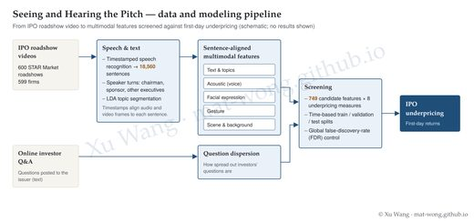
Advisor: Yangjuan Hu, PHBS · First Prize (top 0.13%), Student Category, AEJMC 108th Annual Conference
Problem. How the two leading Chinese short-drama apps expand overseas—ReelShort mainly through localized productions, DramaBox mainly through translated Chinese dramas—and how these strategies shape their revenue.
Model. Compared content mix, viewership, regional revenue and retention of the two platforms, and estimated a Cobb–Douglas revenue model, Revenue = β0·MAUβ1·ARPDAUβ2, in logs; residual tests (autocorrelation, heteroskedasticity, non-normality) led to GLS re-estimation.
Results & contribution. DramaBox (87.7% translated) earns more at the same user scale and monetization (β0 1.29 vs. 1.17) and its revenue grows more than one-for-one with users (MAU elasticity 1.15 vs. 0.73), consistent with broader cross-cultural appeal; ReelShort’s localized hits drive 93% of its views but concentrate 72% of revenue in North America. Payment elasticities below one for both (0.33 vs. 0.18; all at the 1% level) point to weak monetization.
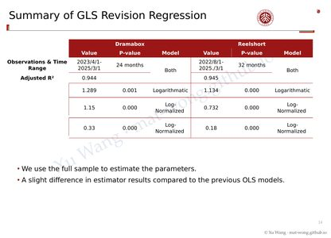
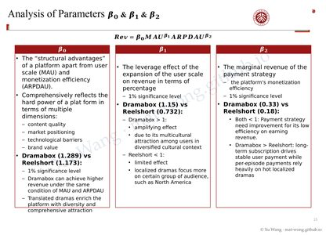
Advisor: Xin Liu, SUFE · SUFE Outstanding Graduation Thesis (top 2%)
Problem. Model students' sequential dining choices from objective behavior rather than self-reported satisfaction.
Model. Ran a 14-day panel of 60+ students (539 observations) and fit a linear-chain CRF conditioned on spending.
Results & contribution. 92.7% accuracy; stationary distributions rank cafeterias by value and reveal takeout's rising share.
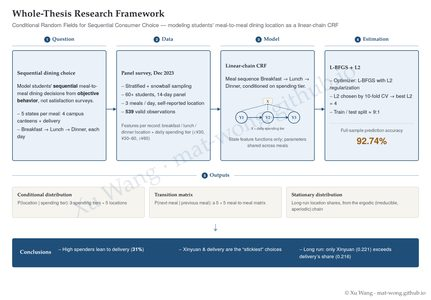
Third Prize (top 1.35%), 13th National Undergraduate Economics Annual Conference
Problem. How the GRI and SASB disclosure standards differ in design and in their economic effects on adopting firms.
Model. TF-IWF mining of 160+ standard documents; a 3,711 firm-year panel from 4,062 ESG reports; DID and logit/probit.
Results & contribution. Contrasted GRI’s stakeholder (equity) focus with SASB’s financial (efficiency) focus and tested four channels through which the choice of standard feeds back on firms: disclosure costs, ESG rating divergence, indirect financing and carbon emissions. Higher ESG ratings go with lower loan spreads for GRI and SASB users alike.
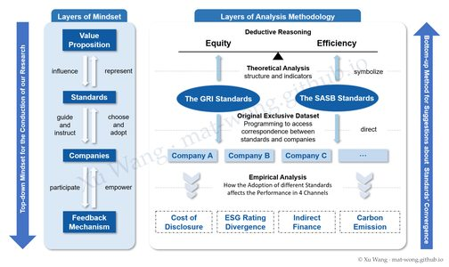
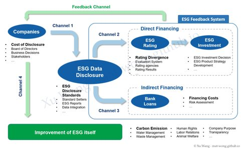
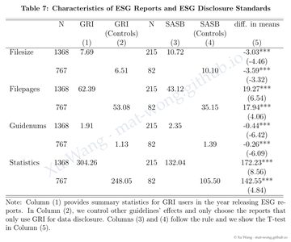
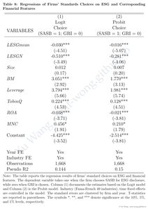
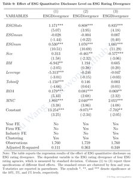
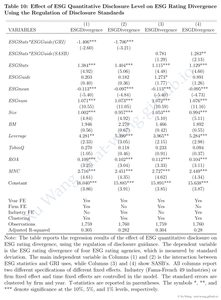
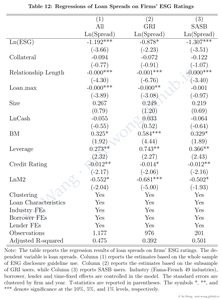
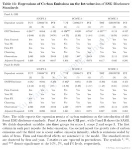
Regression tables for all four channels. Click a figure to enlarge; each opens with a high-resolution download.
Problem. Whether the trend factor, a return predictor built from moving averages of past prices, earns robust returns in China's A-share market after the split-share reform.
Model. A-share data from July 2007 to December 2022; replaced the equal-weighted moving averages with weighted and exponential moving averages; train/test split, Fama–MacBeth regressions, spanning tests against the CH-3 and FF-5 factors, and conditional double sorts.
Results & contribution. With 10% long–short portfolios and a decay rate of 0.92, the EMA version raises the annualized return from 7.37% to 9.54% and holds up in both the training and test periods; it earns returns beyond CH-3 and FF-5. The short-term reversal effect fades after about 20 trading days.
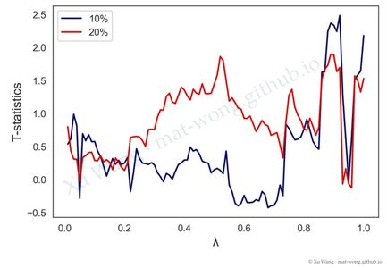
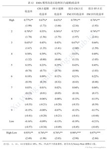
Shanghai Second Prize · team of three
Problem. Classify ancient Chinese glass artifacts as high-potassium or lead–barium glass from their chemical composition, relate weathering to type, ornamentation and color, and recover the composition before weathering.
Model. Chi-squared tests and Apriori association rules for weathering; LightGBM feature importance feeding a multiple regression that backs out pre-weathering composition; K-means sub-classes checked with the CH index and silhouette score; a LightGBM classifier for seven unlabeled artifacts.
Results & contribution. Test accuracy stayed above 80% even after the most informative components were removed; each glass type splits into three sub-types; high-potassium glass shows 18 significantly correlated component pairs against 4 for lead–barium glass.
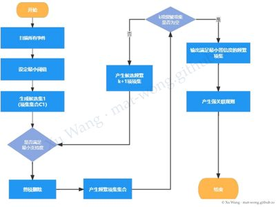
Statistical Modeling: National Third Prize and Shanghai First Prize · Zhengda Cup: National Third Prize · team of three
Problem. Can new-energy vehicles reach the official target of 20% of new-car sales by 2025, which of six policy levers matter most, and which consumers are most likely to buy?
Model. A national survey with 939 valid responses (90.5% valid), checked for reliability, validity (KMO 0.93–0.95) and randomness; an ARIMA(0,2,1) forecast of the sales share; a regression of sales share on six policies (subsidies, license plates, driving-restriction exemptions, battery recycling, public charging, purchase-tax exemption); K-means segmentation (K = 5) of 820 potential buyers.
Results & contribution. The forecast share reaches at most 12.9% by 2025, short of the 20% target. Public charging infrastructure is the most significant lever; purchase-tax exemption and the battery white list also raise the share, while subsidies alone fail the significance checks.
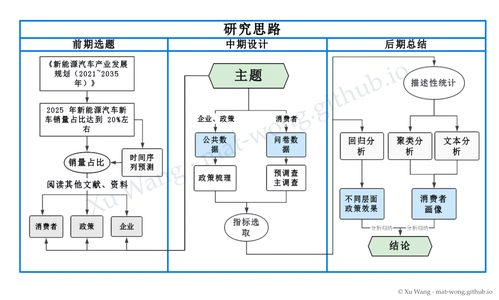
Shanghai Second Prize · team of three
Problem. A building-panel maker buying three raw materials from 402 suppliers through 8 transporters must rank its suppliers, find the smallest viable supplier base, and plan 24 weeks of orders and shipments under capacity and transport-loss constraints.
Model. Four supplier-importance indicators from five years of weekly data, weighted by the entropy method and ranked by TOPSIS; time-series forecasts of weekly supply caps and loss rates; 0–1 integer programs for the minimum supplier set and supplier-to-transporter routing; a genetic algorithm for the cost-minimizing ordering plan.
Results & contribution. Identified the 50 most important suppliers and showed that at least 43 are needed to guarantee 24 weeks of production; supply-cap forecasts reached 94.7% accuracy.
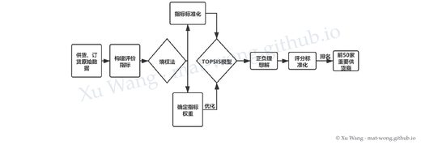
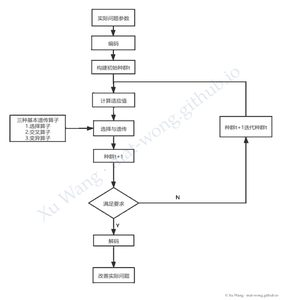
National First Prize
Problem. From a carmaker’s survey of 1,964 target customers across three electric-vehicle brands, find the product and customer factors that drive purchase intent, and show how a salesperson could convert undecided customers.
Model. Cleaned and winsorized the survey; ReliefF feature selection by brand over 25 candidate factors (8 satisfaction scores, 17 customer attributes); Pearson screening and forward selection; binary logistic regression by brand.
Results & contribution. 94.7% overall prediction accuracy (99.1% on non-buyers, 87.5% on buyers). Battery and economy satisfaction raise purchase odds while mortgage and car-loan burdens lower them; for one undecided customer, raising battery satisfaction by 5% and power satisfaction by 1.41% flips the prediction to a purchase.
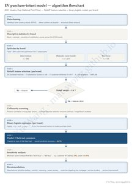
A bilingual (Chinese–English) literature-search workbench for business-school researchers: turns a research question into keyword searches over UTD24 journals, arXiv and SSRN across nine fields, with filtering and export to HTML, Markdown, CSV and JSON. Ships as Codex and Claude Code skills.
AI skills for business PhD research in information systems, operations and marketing, built from 1,000+ papers in the UTD journal list: idea planning, paper reading, empirical pipelines, writing, pre-submission audit and typesetting.
A one-page GRE study guide with a vocabulary and practice workbench.
On Collusion in the Cards
On Localized vs. Translated Micro-Short Dramas
Master of Finance · Shenzhen, China
First-Class Scholarship; admitted through direct admission (top 10% of interviewees).
Exchange Program · Oxford, UK
B.A. in Economic Statistics · Shanghai, China
Rank 1/107; GPA 3.76/4.00. National Scholarship; Shanghai Excellent Graduate. IELTS 7.0.
Product Manager Intern (LLM applications) · Shenzhen, China
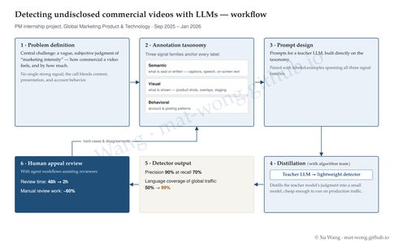
Strategy Operations Intern · Shanghai, China
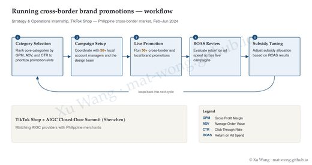
FOF Research Intern
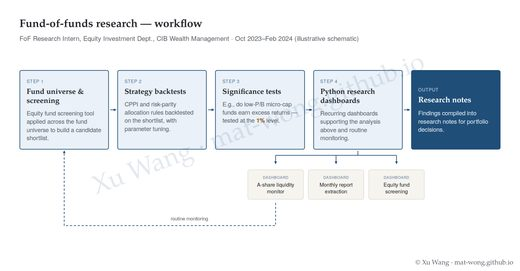
Industry Research Intern · Shanghai, China
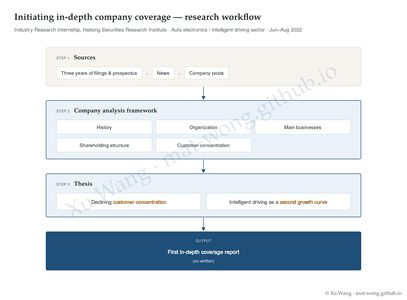